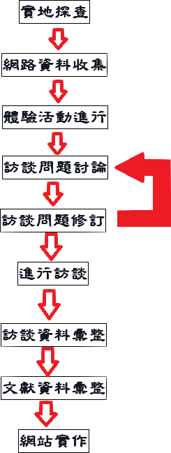
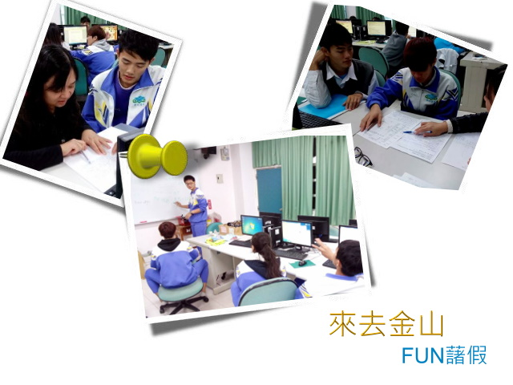

研究設計

本專題研究設計如圖所示。由於我們是以金山在地的「地瓜」為主題，因此首先進行實地探查。再利用網路資源進行資料搜集；因為地瓜有產季的限制，於是必須先設計相關的體驗活動，在產季結束前進行相關的活動。接下來，要擬定及設計訪談的問題，由於我們想探討的問題點隨著對地瓜的認識而有不同的思緒，在這裡我們不斷的討論及修訂，在問題確定之後，才安排訪談。
訪談所得到的資料，比我們想像的資料還要多且豐富。因此，在訪談之後接著進行資料的彙整，以及網站的規劃與設計，至此我們專注於資料的彙整及專題網頁、專題簡報頁的製作。

TOP↑